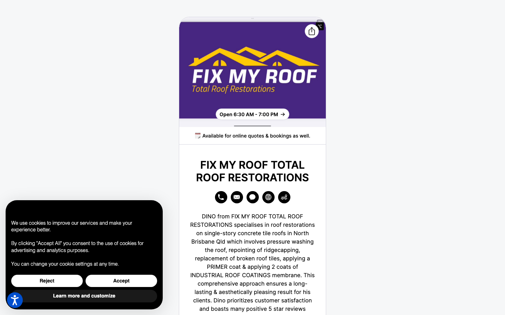

51/100 · strong_redesign · 行业：roofing · 地区：Brisbane · Google 评价：5★ （127 条）
审计结论： audit_score=51 → strong_redesign · weakest: technical 40, ux_conversion 45 · fired: no_https, high_traction_old_site · 2 critical issues
已触发的 hard triggers： no_https ·
high_traction_old_site
independent_http_site
The design relies heavily on a Google Business Profile layout which feels like a directory listing rather than a professional brand website, lacking immediate visual hierarchy for conversion.
新鲜度 4/10 · 信任度 6/10 ·
转化准备度 5/10 · 设计年代
slightly_outdated
值得保留的优点： - The brand colors (purple and yellow) provide good contrast and are distinct. - The text clearly defines the specific service area (North Brisbane) and service type (concrete tile roofs), which is good for relevance. - The mention of ‘5 star reviews’ in the text is a strong trust signal that should be visualized.
Customers overwhelmingly praise Dino for his exceptional integrity, punctuality, and high-quality workmanship, with one reviewer highlighting his refusal to accept payment as a key trust signal.
一致夸赞： exceptional integrity ·
punctual and reliable ·
high-quality workmanship · clean job site ·
clear communication
可直接放上 redesign 后网站的 quote：
“What really impressed me was that he wouldn’t accept any payment for his work.” — Neil, ★★★★★
放哪：Hero section proof of integrity and character
“He quickly identified the problem, explained the solution clearly, and carried out the work to a very high standard.” — Glenn, ★★★★★
放哪：Testimonial section highlighting expertise and process
“Dino’s work is of an excellent standard and he goes the extra mile to ensure the job site is clean.” — Anthony, ★★★★★
放哪：Service details section emphasizing professionalism and tidiness
命中原因： http only
命中原因： phone hidden below fold or missing
命中原因： title=‘# FIX MY ROOF TOTAL ROOF RESTORATIONS’ contains-name=true contains-niche=false
命中原因： no LocalBusiness JSON-LD
-2026-05-11-v1ollama-qwen3.6-27b-nothinkGoogle Places Place Details · most_relevant